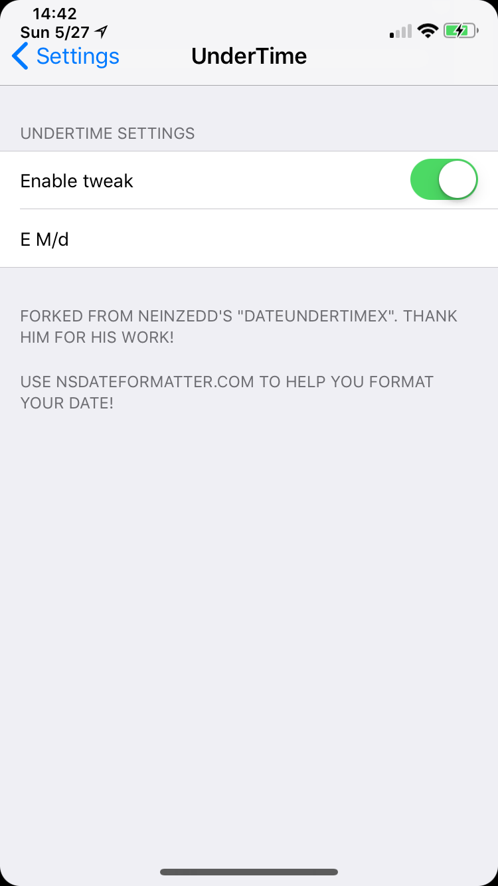

UnderTime allows you to place a customizable date underneath the time in the iPhone X's status bar.
See the top-left of the screenshot below

SET UP THE TWEAK IN SETTINGS
Changelog:
1.5.1: Preference panel updates. Hopefully this will prompt users to set up the tweak.
1.5: Fixed bugs from version 1.5, added warnings to prevent others. Included preference file during installation so tweak loads correctly without changing preferences manually. Added ability to customize color with HEX codes.
1.4: Fixed seconds not updating. Only works in springboard or in apps. LS and CC doesn't update seconds
1.3: Fixed duplicate date bug, added option to customize first line of text, option to customize single line of text, option to use plaintext
I'd like to thank a few people for helping with the development of this tweak. NeinZedd9 for the original code, Justin Proulx (Sn0wCh1ld) for helping me start my iOS development journey, and Tateu for helping me fix a few of the errors in my code.
Thanks everyone, and all my users for their support!
1.2: Added many customization options (Font size, replace date option)
1.1: Inital Release
MPG13's repo